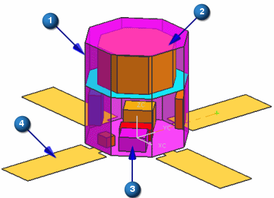

Open the part
Before starting the tutorial, you must download the part.
-
On your desktop or the appropriate network drive, create a folder named meshing.
-
Click the Download link below:
-
Extract the part file to your meshing folder.
-
Start NX.
 Open
Open
-
Navigate to the meshing folder you created.
-
File name
Satellite.prt
-
OK

The satellite is an assembly with two subassemblies: Satellite_Body and Equipment_Layout.
The Satellite_Body consists of
 the outer body of the satellite and
the outer body of the satellite and  the four solar collector panels.
the four solar collector panels.
The Equipment_Layout consists of
 the payload and
the payload and  the six boxes of equipment.
the six boxes of equipment.